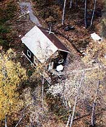
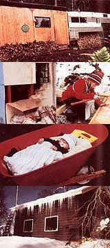

Of mud, bears, and freeland in Alaska
Under the provisions of Alaska's homesite program, a state resident can acquire title to five acres of rural land by "proving up" on the parcel-a process that involves residing on the property for a total of 35 months, building a house, and reimbursing the state for the cost of surveying the lot. Applicants are allowed five years in which to build their cabins, and seven years to satisfy the living requirements.
It was March of 1982 when my husband, Ron, and I decided to take advantage of that seemingly generous offer. We've learned a lot since then, and because homesteading on "free" Alaska land has long been one of the Great American Dreams, I thought you might enjoy hearing about how that dream turned out for us.
Our decision to accept the strenuous challenge of the Homesite Program stemmed from our desire to extricate ourselves and our children, Ronica (age eight) and Michael (three months), from the Anchorage rat race and see, for a change, some direct results from our labor. By way of preparation, we spent two years in planning, acquiring equipment, stockpiling supplies, and shoring up our courage. When time for the move drew near, Ron went on ahead of the rest of us to haul in supplies, supervise the bulldozer work we were having done, and set up our temporary living quarters: a pickup camper with a plywood addition.
The subdivision containing our sparsely timbered lot (and 217 others pretty much like it) is located approximately 100 miles north of Anchorage, on the perimeter of Mt. McKinley's vast river valley region, near the little town of Talkeetna. To reach our place, you must drive nearly five miles on a dirt road that branches off from the Talkeetna highway.
Only 18 of our subdivision's 218 lots are under the Homesite Program; the remaining 200 were sold to the public and so carry no requirements for "proving up." Nonetheless, all property owners in the subdivision are required by state law to form and work within a community association in order to build and maintain roads and other common facilities within the area . . . which creates something of a communications problem, in that most of the 200 non-Homesite lots are absenteeowned. Consequently, our subdivision's roadways (and their three bridges) long remained unimproved.
At first, our truck handled the marginal roads with aplomb, having to meet no more of a challenge than doordeep water and mud resulting from spring rains and the previous winter's melting snow. But as spring deepened into summer and the full force of the annual winter breakup washed over us, the ground gradually softened until our truck sank where it was parked. In all, the roads remained impassable for nine full weeks, forcing us to hike the five miles to the highway, then hitchhike to Anchorage to buy supplies, hitchhike back to our road, and make several tiring trips to pack the goods in by foot.
Independence Day marked the reopening of our roads, and also brought us our first visitors. Ronica had not played with another child for three months, and so was a whirlwind of activity from the moment our guests and their children arrived. And Ron and I delighted in the smoked salmon, turkey, fresh fruit, and potato chips they brought along. But best of all, our friends-having anticipated our lack of "proper" bathing facilities-trucked in a 55-gallon steel drum, shower hosing, and a cast-iron bathtub. We elevated the drum on a foundation of cinder blocks, filled it with water, built a fire beneath, and let gravity move the heated water from the drum to the tub. It was heaven.
But a few days later our guests were gone (and none too soon for their sake, since the three streams that cut our road flooded right after they left, washing out the embankments leading to the bridges), and it was back to work for the Caldwells.
Our original plan had been to build a large log house on a sunny bluff that we'd had bulldozed clear of brush and timber. But things rarely go exactly as planned, and our sunny springtime bluff turned out to be a summertime sea of mud that even a network of laboriously hand-dug runoff ditches couldn't keep drained. It soon became obvious that we'd have to find a drier building site. And (to further complicate things) as we got into the slow, hard work of felling, limbing, and hauling in spruce trees (the largest of which was a 50-footer) for our future house, we realized that, at the rate we were going, we'd reach retirement age before we'd have a home.
After thinking through the situation and the alternatives available to us, we down-scaled our plans to a modest frame house-which, we told ourselves, could be used as a guest cabin once we (someday!) got our nice big log home built. But in order to finance the materials we'd need to build that frame house, we'd have to return to Anchorage and work through the coming fall and winter.
So, at summer's end, we reluctantly left our land and went back to the city, where we worked hard, saved hard, and spent our spare hours poring over carpentry books, drawing and redrawing house plans, estimating what the necessary tools and materials would cost, and visiting housing projects to gain a better understanding of the intricacies of frame construction. The following summer, after breakup, we were ready for our second go at proving up on our "free" Alaska land.
With the help of a fellow Homesiter who was an experienced carpenter, we began construction by digging nine sixfoot-deep holes (down to a bedding of firm gravel) around a 20' X 24' perimeter. After sifting our creek's bed for sand to use in mixing concrete, we built up cinder block foundation piers to support a fully insulated, solid box floor. Balloon framing-utilizing twelve-foot-long 2 X 4 exterior wall studs-provided us with a roomy second floor plus a small attic space for storage.
When the big day finally came and we moved out of the camper and into our warm, tightly built little house, we knew we had at last realized what had many, many times seemed to be an impossible dream. Furthermore, things continued to get better from there on: During the summer of 1983, our subdivision association finally got sufficiently organized to have our roads bulldozed down to a gravel base. Now-though winter access is still a problem-the roads are dependable enough that we're able to discontinue Ronica's statesponsored correspondence schooling and enroll her in a public school. (Unfortunately, our subdivision association's activities have since been put on legal hold pending majority approval of further projects, and therefore nothing more has been accomplished.)
So we're now official Alaska free-land homesteaders. But the price we paid was tremendous. For one thing, the cost of proving up on our lot came to approximately half the parcel's current market value. There was never enough money to go around, so during the past three years we've become adept at piecing together our vehicles, our clothes, and our meals. ( I hadn't realized how distasteful Ronica found our diet of canned stew, peanut butter, and Tang until I found her-rock in one hand and fishnet in the other-trying to catch a squirrel for dinner.)
But the highest cost of all was emotional: We were continually required to be strong, to tackle one problem after another, to keep going long after we thought we'd passed our breaking points. But for all of that, we still feel that the life we've bought with our hard work and sacrifice is more than worth the steep price we've paid. Our children are happy and independent, and wear the rosy blush of health on their cheeks. Ron and I have learned the value of mutual trust, faith, and teamwork, and know now that we can indeed turn a dream into reality.
Today, when we sit beside our creek and listen to the sounds of the forest, we can't help but smile at our success in having earned title to a piece of Alaska's sometimes costly "free" land.
EDITOR'S NOTE: To qualify for the Alaska Homesite Program, you must reside in the state for at least one year immediately preceding the date of application. For more information, write the Department of Natural Resources, 400 Willoughby Ave., Juneau, AK 99801.
|
 TOP TO BOTTOM: This wood-heated pickup camper with an add-on room provided temporary shelter. (While the family was in Anchorage for the winter, a black bear appropriated the camper.)... A plywood shelter damaged by a hungry bear . . . . Ronica helps her parents with a construction project . . . . Content in his wheelbarrow carriage, Michael accompanies' his parents to work .... Alaskan snow adorns the south side of the Caldwells' house. |
 |
|